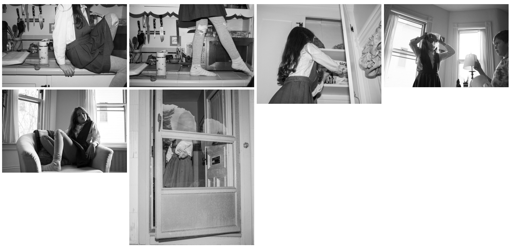

welcome to the secret first words portal ⋆.ೃ࿔ ݁ ˖*༄*ੈ✩‧₊
lol just wanted a place to document previous prompts in one place
ed 4 - aug 12
"fiction and/or non-fiction"
ed 3 - may 19
"precarity" + photo set by Alex Farias

ed 2 - april 8
"company" + accompanying claymation videos by Connor Schultze
ed 1 - mar 1
"Will"